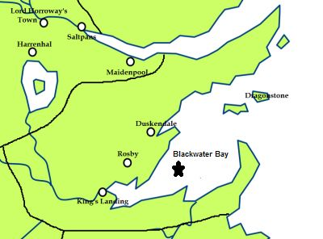

Blackwater Bay
The Blackwater Bay is a large is a body of water on the east coast of Westeros. The great city of King’s Landing sits on Blackwater Bay where the Blackwater Rush pore into the bay.
Blackwater Bay is an inlet of the Narrow Sea, separated from it by the Gullet, held between the arms of Crackclaw Point to the north and Massey’s Hook to the south, with the island of Dragonstone guarding the entrance to the bay. Elements of the Iron Throne fleet patrol the Bay and ensure it is kept free from piracy. Aside from King’s Landing and Dragonstone, the largest port on the bay is Duskendale (which serves as a secondary port for King’s Landing when the main port is overwhelmed with traffic), whilst the largest island is Driftmark, the seat of House Velaryon.
Map on Next page.
